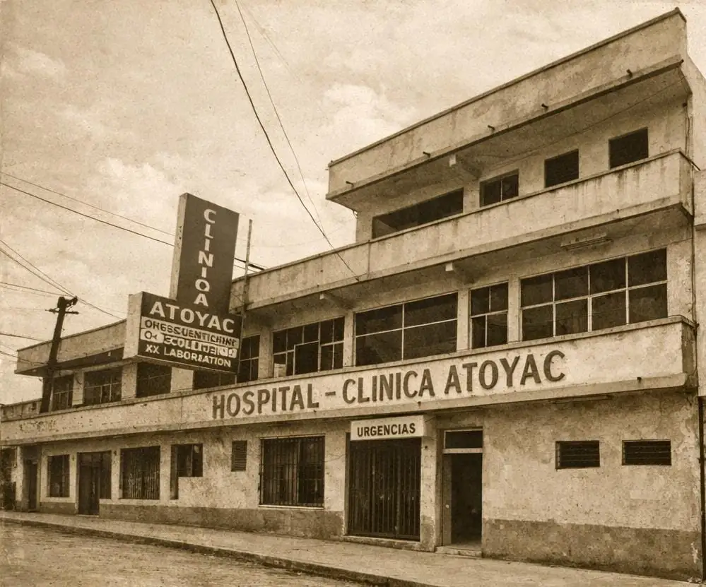

Conócenos
Misión
Brindar atención médica integral y de excelencia, combinando tecnología avanzada con un enfoque humano y cercano. Nuestro objetivo es garantizar la salud y bienestar de cada paciente que confía en nosotros, ofreciendo servicios especializados y accesibles en Atoyac de Álvarez y sus alrededores.
Visión
Ser reconocidos como el hospital líder de la región, destacando por la calidad de nuestros servicios, la innovación tecnológica y el compromiso constante con la comunidad. Aspiramos a marcar un estándar de excelencia en atención médica y bienestar.
Inicios

Fundado en 1995, el Hospital Clínica Atoyac nació como un pequeño centro médico con la visión de brindar atención de calidad en la región. Desde sus primeros días, se caracterizó por un trato cálido y cercano, combinando prácticas médicas modernas con un fuerte compromiso con la comunidad. La infraestructura inicial era modesta, pero cada espacio estaba diseñado para la comodidad y seguridad del paciente.
En sus primeros años, el hospital enfrentó desafíos típicos de una institución en crecimiento: consolidar personal capacitado, ganar la confianza de la comunidad y adquirir tecnología médica adecuada. Sin embargo, gracias a la dedicación de su equipo y a la visión de sus fundadores, logró establecerse como un referente confiable de atención médica privada.
Fundadores
El hospital fue creado por el Dr. Juan Pérez y la Dra. María López, profesionales con amplia experiencia en medicina y administración hospitalaria. Su propósito era ofrecer un centro médico seguro, confiable y cercano a la comunidad de Atoyac de Álvarez. Su visión no solo incluía atención médica de calidad, sino también formar un equipo comprometido con la salud integral de cada paciente.
Desde el inicio, los fundadores promovieron valores de ética, profesionalismo y humanismo, que hasta hoy siguen siendo la base de nuestra institución.
Actualidad
Hoy, Hospital Clínica Atoyac es un referente regional en atención médica privada. Contamos con modernas instalaciones, tecnología de punta y un equipo de especialistas altamente capacitados en diversas áreas como pediatría, cirugía general, ginecología, medicina interna y urgencias.
Además, hemos incorporado programas de calidad y seguridad hospitalaria, asegurando que cada paciente reciba atención integral y confiable. La innovación constante y la mejora continua nos permiten responder a las necesidades cambiantes de la salud y bienestar de la comunidad.

Futuro
Miramos hacia el futuro con el objetivo de expandir nuestros servicios, integrar nuevas tecnologías médicas y seguir siendo un hospital de referencia en la región. Planeamos fortalecer la atención preventiva, abrir nuevas especialidades y mejorar continuamente la experiencia del paciente.
Nuestra meta es combinar la innovación tecnológica con la calidez humana que nos distingue, asegurando que Hospital Clínica Atoyac continúe siendo sinónimo de confianza, excelencia y compromiso con la salud de la comunidad.